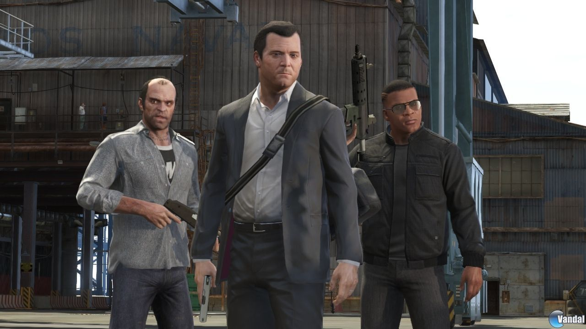
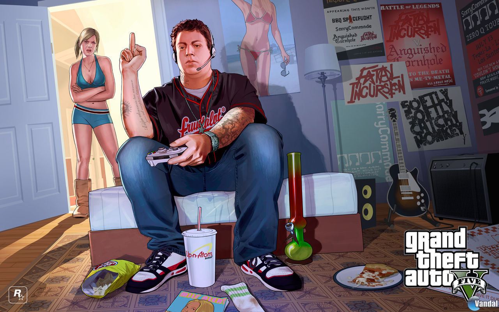
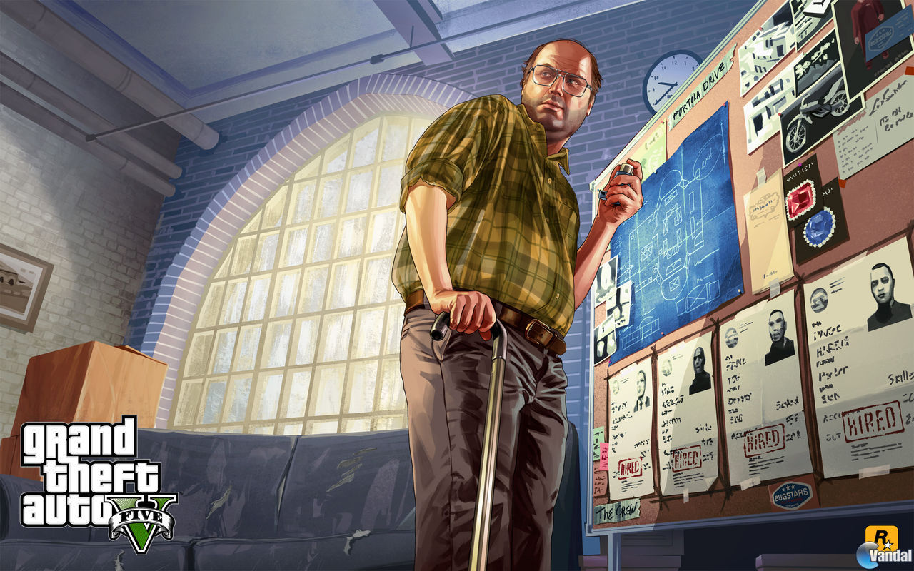
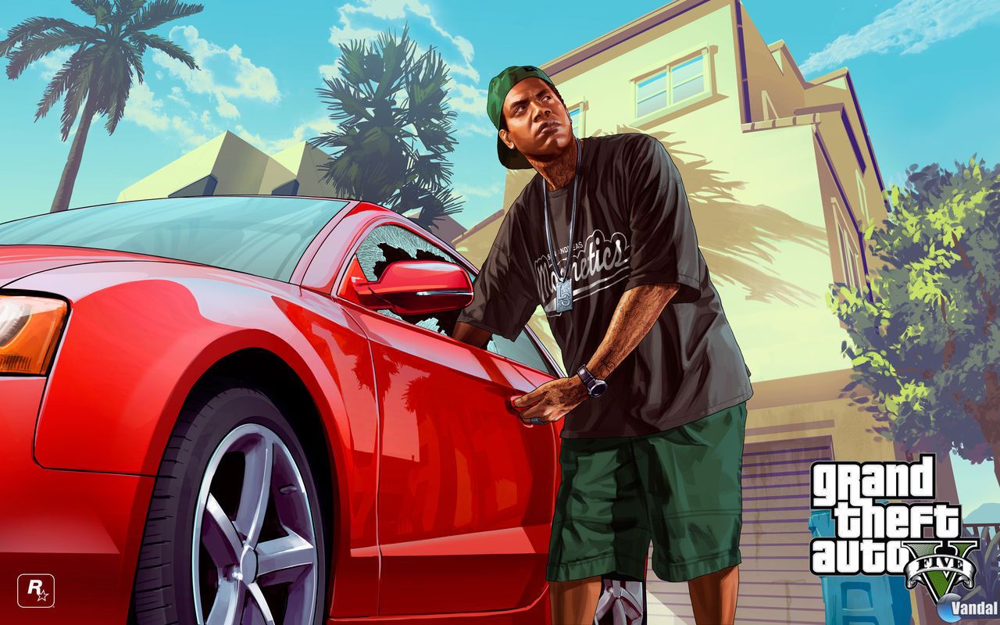

Grand Theft Auto V

Descripción
Grand Theft Auto V nos lleva de vuelta a San Andreas, un estado ficticio inspirado en California, y a Los Santos, una enorme ciudad basada en Los Ángeles. Esta vez, la historia cuenta con tres protagonistas muy diferentes entre sí: Michael De Santa, un antiguo ladrón de bancos que intenta llevar una vida tranquila; Franklin Clinton, un joven que busca escapar de su situación y abrirse camino en el mundo criminal; y Trevor Philips, un antiguo piloto militar convertido en un criminal completamente impredecible.
Una de las grandes novedades de esta entrega es que podemos controlar a los tres protagonistas e ir alternando entre ellos durante la aventura. Cada uno cuenta con su propia personalidad, habilidades especiales y situaciones particulares, lo que da lugar a una historia llena de robos, persecuciones, tiroteos y situaciones de lo más disparatadas. Además, podremos participar en grandes golpes en los que tendremos que preparar nuestros planes, elegir a los miembros del equipo y decidir cómo llevar a cabo cada atraco.
En cuanto a la jugabilidad, GTA V mantiene la esencia de la saga con un enorme mundo abierto lleno de actividades y posibilidades. Podremos recorrer Los Santos y sus alrededores, completar misiones principales y secundarias, practicar deportes como el golf o el tenis, participar en carreras, comprar propiedades y, por supuesto, hacer todo tipo de locuras por la ciudad. Todo ello acompañado del característico humor negro, la sátira social y las numerosas referencias que siempre han definido a Rockstar.
Pero eso no es todo, ya que esta entrega también dio lugar a GTA Online, su ambicioso modo multijugador. En él podremos crear nuestro propio personaje, recorrer el mismo mundo que en la campaña y realizar todo tipo de actividades junto a otros jugadores. Desde organizar golpes y comprar negocios hasta competir en carreras, participar en diferentes modos de juego y construir nuestro propio imperio criminal. Además, Rockstar ha seguido ampliando este modo durante años con nuevas misiones, vehículos, propiedades y actualizaciones.
Capturas del videojuego




Información del videojuego
| Desarrollador | Plataforma | Fecha de lanzamiento |
|---|---|---|
| Rockstar North | PS3, PS4, PS5, Xbox 360, Xbox One, Xbox Series X|S y PC | 17 de septiembre de 2013 |
Mi opinión personal
Vale... Estamos ante posiblemente el videojuego que marcó de verdad un antes y un después en la industria y en la vida de millones de jugadores: GTA V. Una de las entregas más ambiciosas de Rockstar, de la que me encantaría decir que no tiene defectos, pero... hay algunos aspectos en los que, a mi parecer, se queda un poco corto.
Comencemos por su historia. Esta vez podemos controlar a tres protagonistas, una novedad bastante importante dentro de la saga y que acabó convirtiéndose en una de las características más míticas del juego: Michael, Trevor y Franklin. Volvemos al estado de San Andreas y a Los Santos, una ciudad inspirada en Los Ángeles y su entorno. Los tres personajes tienen personalidades y estilos de vida muy diferentes, pero se complementan bastante bien: Michael es un antiguo ladrón de bancos que ahora vive como un millonario; Trevor es el auténtico loquito del grupo, impredecible y completamente desquiciado; y Franklin es un chico de barrio que intenta salir adelante y mejorar su situación, empezando con pequeños golpes hasta acabar metido en robos cada vez más importantes.
Por cierto, ¿os acordáis de que cuando hablé de The Lost and Damned dije que su protagonista era muy amigo de un tal Trevor? Pues ahora ya sabéis por qué lo decía. ¡Johnny Klebitz vuelve a aparecer en GTA V y tiene relación directa con Trevor! Además, podemos reconocer la icónica calavera de The Lost en la vestimenta de los moteros. Es uno de esos detalles que conectan las distintas entregas y que demuestran que Rockstar no se olvida de sus personajes... aunque a veces parece que les tiene bastante poco cariño.
En cuanto a la jugabilidad, volvemos a una conducción más sencilla y accesible que la de GTA IV, algo que personalmente me parece bastante bien. También contamos con una buena variedad de actividades secundarias, aunque aquí quiero detenerme en un punto: comparado con otros GTA, siempre he tenido la sensación de que a GTA V le faltan algunas actividades y posibilidades. Además, su historia me parece un poco más floja de lo que esperaba, especialmente teniendo en cuenta el historial de Rockstar a la hora de crear grandes narrativas. Repito, esta es mi opinión personal.
Y luego tenemos GTA Online, que ha sido un éxito enorme y que sigue recibiendo contenido hasta el día de hoy. Sí, después de tantos años seguimos con él... ¡Rockstar, suéltale el brazo ya!
Un dato curioso es que Rockstar llegó a trabajar en una expansión para un jugador protagonizada por Trevor. De hecho, Steven Ogg, su actor de captura de movimiento y voz, comentó que había participado en la grabación de material para este contenido. Sin embargo, nunca llegó a publicarse y el proyecto acabó cancelándose. Y yo personalmente habría disfrutado muchísimo de una expansión así. Podría haber aportado bastante al juego, como hicieron las expansiones de GTA IV. (Te odio, GTA Online).
Pero bueno, tampoco vamos a quedarnos solo con lo negativo, porque GTA V sigue siendo un juegazo. Nos ofrece un mundo enorme en el que podemos hacer una gran variedad de cosas, cuenta con personajes muy memorables y mantiene intacto ese humor negro tan característico al que Rockstar nos tiene acostumbrados.
En definitiva, aunque tenga algunos aspectos que personalmente habría mejorado, GTA V es una entrega tremendamente ambiciosa y entretenida que ha dejado una huella enorme en la industria.